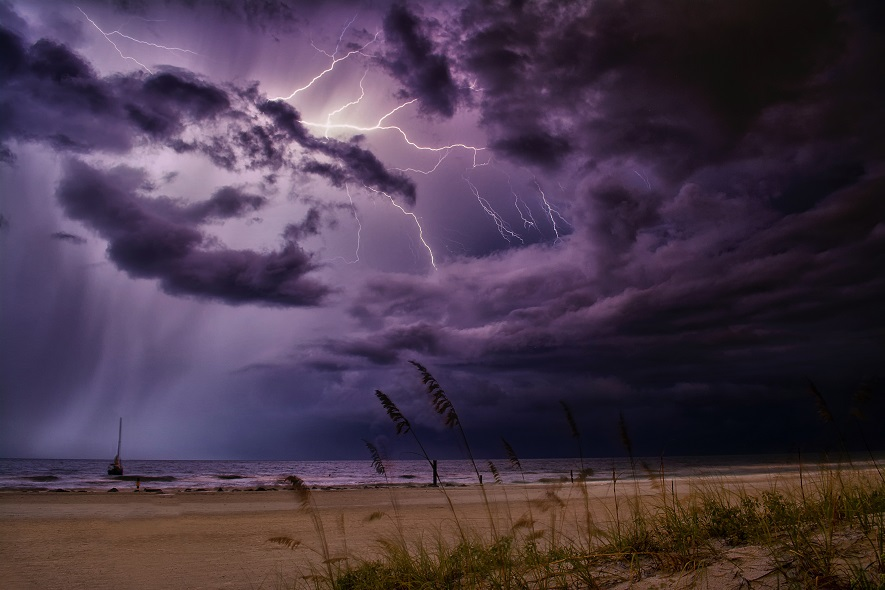

Overview
Purpose
This website is a platform for sharing original poetry and insights written by myselft, as well as curated selections of poetry from established and emerging poets. Through the power of language and creativity, I aim to inspire and connect with poetry enthusiasts and spiritual seekers, evoking emotions of love, happiness, and contemplation while promoting personal growth and self-reflection.
Audience
This website is directed to primarily target poetry enthusiasts, writers, and spiritual seekers who are looking for a source of inspiration, connection, and personal growth. I also aim to connect with book lovers, educators, and anyone who appreciates the beauty and power of language and creative expression. Additionally, I hope to appeal to individuals who may not have previously explored poetry but are open to discovering the transformative power of this art form.
Branding
Website Logo

Style Guide
Color Palette
Palette URL: https://coolors.co/482e6e-b24fe8-d1aa9d-73696e-e2f8c1| Primary | Secondary | Accent 1 | Accent 2 |
|---|---|---|---|
| [#482e6e] | [#b24fe8] | [#d1aa9d] | [#E2F8C1] |
Typography
Heading Font: ZCOOL QingKe HuangYou (Google font)
Paragraph Font: Annie Use Your Telescope (Google font)
Normal paragraph example
Site Plan Text
Welcome to my page Poetry Oasis an place where you can discover the Transformative Power of Words. Our website is dedicated to nurturing the human spirit through the art of poetry. Whether you're a seasoned poetry enthusiast, a writer seeking inspiration, a spiritual seeker on a quest for meaning, or simply someone curious about the beauty of language, Poetry Oasis invites you to explore a world of words that will touch your soul, ignite your imagination, and expand your horizons. I believe in the power of words to inspire for that reazon the fist page is Original Poetry showcases original poetry and insights written by myselft, as well as carefully curated selections from established and emerging poets. Immerse yourself in verses that explore the depths of love, happiness, and contemplation, and embark on a journey of self-discovery and personal growth. The second page is Poetry of Famous writers, contain poetry that encourages and nurturing Personal Growth and Self-Reflection. Seeking personal growth and self-reflection is a fundamental aspect of the human experience that's whay Poetry Oasis provides a nurturing space for individuals to engage with poetry as a catalyst for these transformative processes. This carefully curated content prompts introspection, encourages self-expression, and serves as a companion on the path towards self-discovery. Through the lens of poetry, I invite you to explore your emotions, embrace vulnerability, and discover new dimensions of your own being. And finally, the third page is A Literary Resource. Beyond the realm of personal expression, Poetry Oasis serves as a valuable resource for educators, book lovers, and anyone with an appreciation for literature. Our website offers insights into the works of renowned poets, literary analysis, and discussions on the impact of poetry on society and culture. Discover recommendations for thought-provoking poetry collections, gain a deeper understanding of the craft, and enhance your literary knowledge through our engaging articles and features.
paragraph example
Website main Pages (3) that are listed below: Original Poetry, Poetry of Famous writers, and A Literary Resource . This 3 pages will show the main information about the power of words to inspire and connect individuals across cultures, languages, and experiences through insights into the works of renowned poets, personal poetry, literary analysis, and discussions on the impact of poetry on society and culture.
Navigation
Site Map
Content
Home - Original Poetry
Home - Original Poetry will contain the title, introduction, overview(purpose), and personal poetry.
Images for the Home page

Poetry of Famous writers
This page will contain Poetry of Famous Writers
Images for the Page 2

A Literary Resource
This page will contain an article of a poetry and space for debates.
Images for the Page 3
Wireframes
Create three wireframes for your site. One for each page and list them here
Home
[Any additional details about home that the wireframe does not make clear]
[Page 2]
[Any additional details about page 2 that the wireframe does not make clear]
[Page 3]
[Any additional details about page 3 that the wireframe does not make clear]